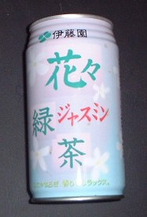

Free talk 雑談。
（106)ジャスミン茶
むかし自宅の近くに「ジャスミン」という名の喫茶店があった。中学生の頃（だったかな？）、その喫茶店に初めて行ったらジャスミン茶なるものがあった。“紅茶の１種か”くらいに思って注文してみた。するとなんだか独特の匂いが鼻について、とても飲めない。それで半分も飲まないで残した。
それでも名前がカッコイイので、“ モノは試し”と思って２回ほど注文してみたが結果は同じだった。それでσ(-_-)にジャスミン茶は合わないと決めて、そのまま大きくなった。(^＿^)
ン十年経って仕事の関係で台湾へ行く機会があるようになった。するとたまにジャスミン茶が出ることがある。匂いはしっかり覚えているから、出てきたとたん（おお、ジャスミン茶か....）。
それでもよかれと思って出してくれたわけだから、とにかく口をつけた。すると以前ほど抵抗感がない。（あぁ、やれやれ....）と思いながら、全部飲みほした。それからも台湾で何かの拍子に出てきた場合は、まぁ、なにごともなしに飲むことができるようになった。といっても、もちろん、σ(-_-)から頼むことはなかった。
そうこうするうちに数年前から台湾へゆく用事もなくなった。そこでジャスミン茶のこともすっかり忘れていた。
先日、ウーロン茶でも飲もうと思って自販機の前に立った。するとジャスミン茶なるものがある。（ふ〜ん、ウーロン茶、麦茶に続いて、いよいよジャスミン茶の出番か・・・）と思いながら、気まぐれで買ってみた。

プルトップをクイっと開けると、なんだかなつかしいあの香りが。。。（ふ〜ん）と思いながら、グイと一飲み。するとなんと、おいしいではないか！（笑） なんだか知らぬ間に身体が受けつけるようになっていた。どうやらσ(-_-)には絶対味覚や絶対嗅覚なるものは絶対ないな。ン？、関係ないか（笑）